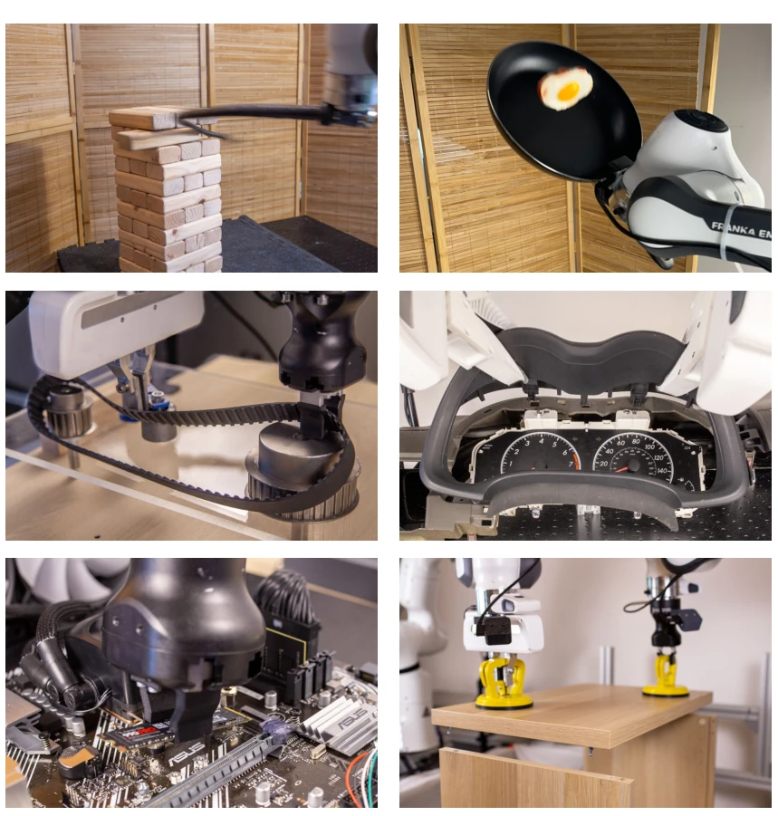
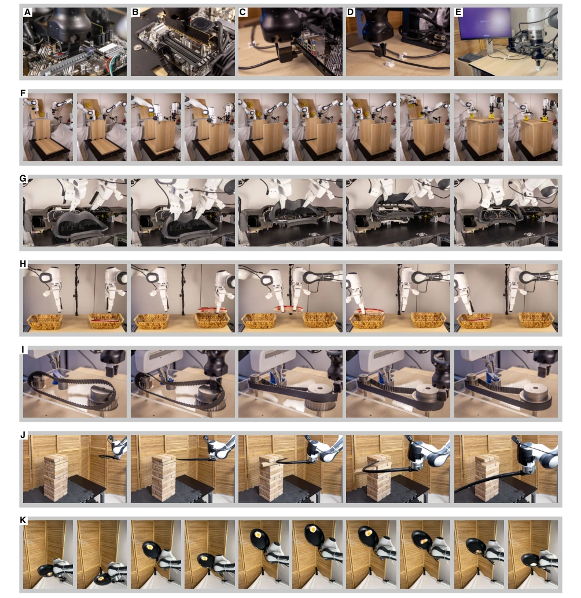
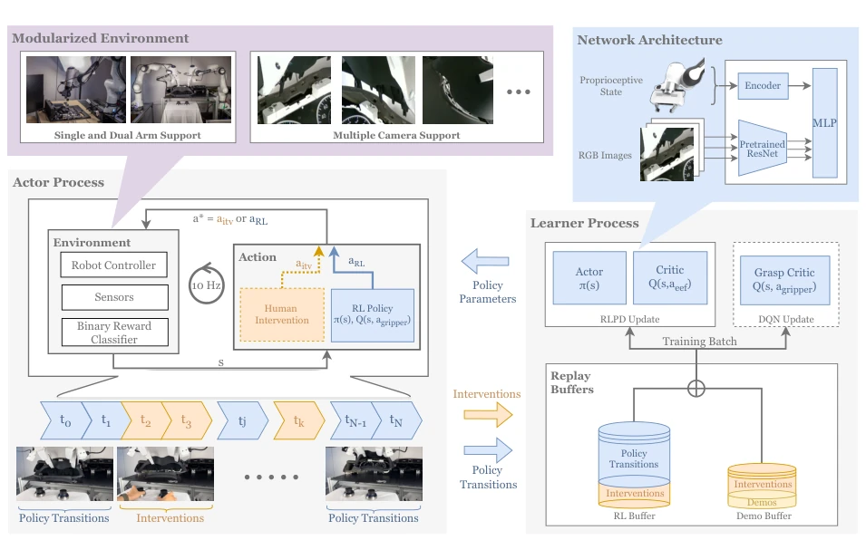
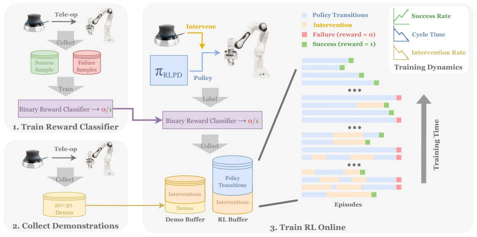
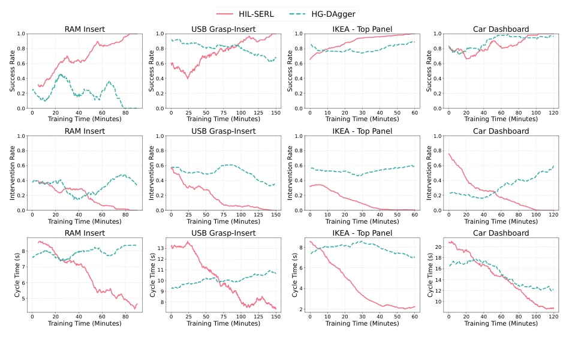
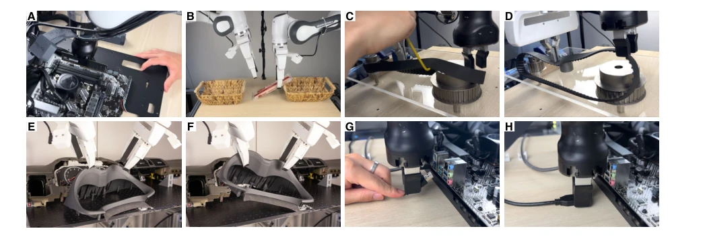
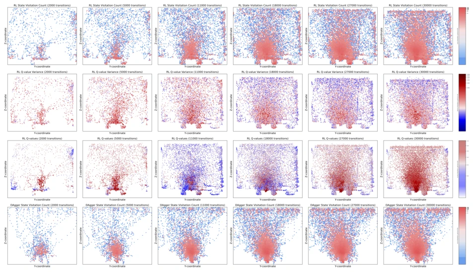
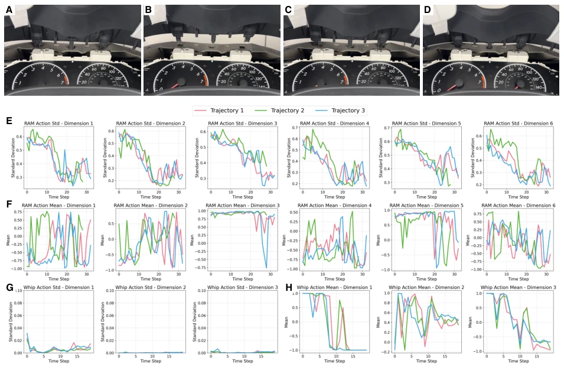
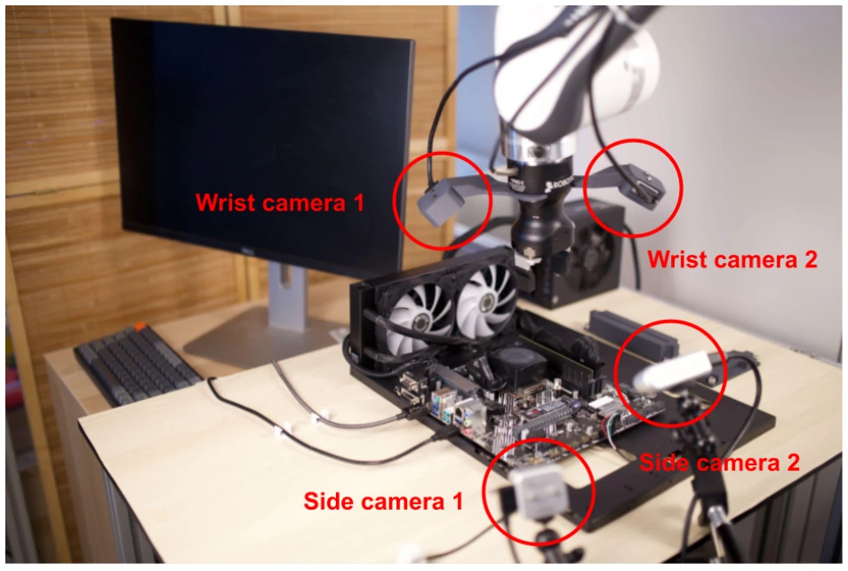
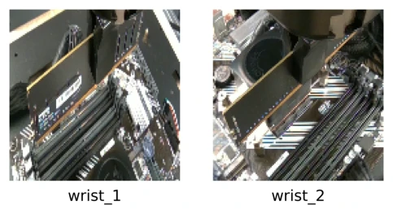

This paper pushes the operational capabilities of RL in the real world one step further. The HIL-SERL system is indeed remarkable; it can handle high-difficulty tasks such as motherboard assembly and Jenga block stacking with 1-2.5 hours of training, achieving a success rate close to 100%, which is 1.8 times faster than imitation learning. However, do not be misled by the term 'autonomous'; the core still relies on continuous human correction (Human-in-the-Loop), with high intervention frequency in the early stages, essentially constituting 'human-machine co-piloted' reinforcement learning. Although the authors boast of surpassing human operation speed, it relies on specific hardware and pre-trained visual backbones, casting doubt on its generalization. Furthermore, the Jenga task still requires expert demonstrations rather than real-time correction, exposing the limitations of pure RL. Overall, this is a victory of engineering tuning rather than an algorithmic disruption, but it does demonstrate the feasibility of RL on real hardware, presenting a viable prospect for the industry. It is worth referencing but should not be deified.
研究动机Motivation
真实世界机器人操作面临样本复杂度高、优化不稳定等挑战，纯 RL 难以落地，而模仿学习（IL）往往受限于演示数据质量，难以超越人类水平（Cui and Trinkle, 2021）。现有 RL 方法如 SERL (Luo et al., 2024a) 虽在仿真或简单任务有效，但缺乏人类纠正机制，难以处理双臂协调或动态操作（如 Jenga 抽积木）。本文旨在解决 RL 在真机上的样本效率与稳定性问题，通过结合人类示范与纠正，实现复杂视觉操作策略的高效学习，填补了现有方法在长视界、高维状态空间任务上的空白，推动具身智能向实用化迈进。
Real-world robot manipulation faces challenges such as high sample complexity and unstable optimization; pure RL is difficult to deploy, while imitation learning (IL) is often limited by demonstration data quality and struggles to surpass human levels (Cui and Trinkle, 2021). Existing RL methods such as SERL (Luo et al., 2024a) are effective in simulation or simple tasks but lack human correction mechanisms, making it difficult to handle dual-arm coordination or dynamic operations (such as Jenga block stacking). This paper aims to address the sample efficiency and stability issues of RL on real hardware by combining human demonstrations and corrections to achieve efficient learning of complex visual manipulation policies, filling the gap in existing methods for long-horizon, high-dimensional state space tasks, and advancing embodied intelligence towards practical application.

Figure 1: Overview of experimental tasks. A subset of tasks considered in this paper, they include whipping out a Jenga block from its tower, flipping an object in a pan, assembling complex devices such as a timing belt, a dashboard, a motherboard, and an IKEA shelf.

Figure 4: Illustrations of the tasks in our experiments. (A)-(E) A sequence of motherboard assembly tasks: SSD installation, RAM insertion, USB cable grasping and insertion into a slot and a clip, and booting up the computer to ensure motherboard functionality. (F) A manipulation sequence to assemble an IKEA furniture: the robot first assembles two side panels, then installs the top panel onto the mounted side panels. (G) A manipulation sequence to assemble a car dashboard, two robot arms first grasp the workpiece then align multiple pins to the slots. (H) Two arms performing a coordinated handover task. (I) Two arms performing a timing belt installation task. (J) A manipulation sequence of Jenga whipping task, where the robot needs to extract one Jenga piece from the tower without crashin
The system architecture is divided into three parts: Actor, Learner, and Replay Buffers, with asynchronous communication. The Actor executes policies and interacts with the environment, while the Learner uses the RLPD algorithm (Ball et al., 2023) to update policies from demonstrations and online data. Innovations include: 1) Human intervention mechanism: humans correct errors via SpaceMouse during the early training phase, with data stored in Demo and RL buffers to accelerate convergence; 2) Pre-trained visual backbone: uses ImageNet pre-trained ResNet-10 to extract features, enhancing optimization stability; 3) Sparse reward: trains a binary classifier as a reward signal, providing positive rewards only upon task success; 4) Dual controller design: continuous actions control the robotic arm, while discrete actions (DQN) control the gripper, addressing the difficulty of approximating discrete actions. The overall process first collects data to train the reward classifier, then conducts online RL training combined with human demonstrations, gradually reducing intervention to ensure the policy learns in a safe and efficient environment.

Figure 2: Overview of HIL-SERL. This figure illustrates the architecture of HIL-SERL, which comprises three primary components: the actor process, the learner process, and replay buffers. These components communicate asynchronously to facilitate efficient data flow. The actor process receives updated policy parameters from the learner process, interacts with the environment, and sends collected interaction data to the replay buffers. The environment is modular, supporting various external devices and multiple robotic arms. A human operator can intervene via teleoperation tools, such as a SpaceMouse. The learner process samples data evenly from two replay buffers and updates the policy using RLPD. When gripper control is required, a grasp critic is additionally trained with DQN.

Figure 3: This diagram illustrates the process for training HIL-SERL. First, we tele-operate the robot to collect positive and negative samples and train a binary reward classifier. We then collect a small set of demonstrations, which is added to the demo buffer at the start of RL training. During online training, we use the binary classifier as a sparse reward signal and provide human interventions. Initially, we provide more frequent interventions to demonstrate ways of solving the task from various states. We gradually reduce the amount of interventions as the policy reaches higher success rate and faster cycle times.
Tested on 7 categories of tasks, including motherboard assembly, IKEA furniture, Jenga block stacking, etc. Baseline comparisons include Behavior Cloning (BC) and SERL. Evaluation metrics are success rate, cycle time, and intervention rate. Results show that HIL-SERL achieves a 100% success rate on most tasks, with an average success rate improvement of 101% and cycle time 1.8 times faster. Ablation studies indicate that human correction is crucial for policy learning, particularly in the initial phase. Visualization reveals that state access forms a 'funnel' shape during the policy learning process, and increased Q-value variance indicates the policy becomes more confident. The Jenga task requires expert demonstrations rather than real-time correction due to its dynamic nature, demonstrating the system's flexibility. Robustness tests demonstrate that the policy can handle disturbances and grasp failures, reflecting adaptive capabilities. Compared to BC, RL policies perform better in long-horizon tasks, proving their generalization potential.

Figure 5: Learning curves for experimental tasks. This figure presents the success rate, cycle time, and intervention rates for both HIL-SERL and DAgger across few representative tasks, displayed as a running average over 20 episodes. For HIL-SERL, the success rate increased rapidly throughout training, eventually reaching 100%, while the intervention rate and cycle time progressively decreased, with the intervention rate ultimately reaching 0%. For HG-DAgger, the success rate fluctuates throughout training episodes and does not necessarily increase as training progresses. Since interventions occur frequently, leading to successful outcomes, the true policy success rate is likely lower than the curve suggests. Additionally, the intervention rate does not consistently decrease over time, in

Figure 6: Robustness evaluation for policies learned by our method. (A) RAM insertion under external perturbations, such as a moving motherboard. (B) Retrying behavior during a handover task after the grippers are forced open. (C-D) Reactive responses in the timing belt task, addressing both external disturbances and unexpected deformations during execution. (E-F) In the dashboard assembly task, the policy performs re-grasps after one or both grippers are forcibly opened. (G-H) In the USB grasp-insertion task, the policy adapts to external disturbances and poor grasps by releasing and regrasping the object.

Figure 7: Visualization of policy training dynamics. (A) State visitation heatmaps during HIL-SERL training: The policy progressively forms a “funnel" shape, concentrating more on areas around the demonstrations and corrections, showing robustification in these regions. (B) Q-value variance scatter plots throughout training: States within the funnel show increased Q-value variance, indicating that the policy is gaining greater confidence in actions that lead to successful outcomes. (C) Q-value scatter plots across training: Critical states, marked by higher Q-value variance, are also associated with high Q-values. (D) State visitation heatmaps during HG-DAgger training: The funnel shape is less pronounced, more diffused distribution of visitation density.

Figure 8: Reactive vs Predictive Behavior. (A-D) A sequence of reactive behaviors in the dashboard assembly task: after getting stuck in contact, the policy breaks the contact by quickly lifting two arms, then re-establishing the contact when approaching the target, finally succeeding in the insertion. (E) Variance plots from trained Gaussian policies in the RAM insertion task, showing three trajectories. Initial variance is high but rapidly decreases as the target is approached. (F) Mean plots from trained Gaussian policies in the RAM insertion task, with values ranging from -1 to 1. (G) Variance plots in the Jenga whipping task, remaining consistently low (near 0), indicating stable execution and open-loop behavior. (H) Mean plots in the Jenga whipping task, with values between -1 and 1,
其他图片Other Figures

Figure 9: Hardware setup for the motherboard assembly task.

Figure 10: Sample input images from cameras used as inputs to the policy.